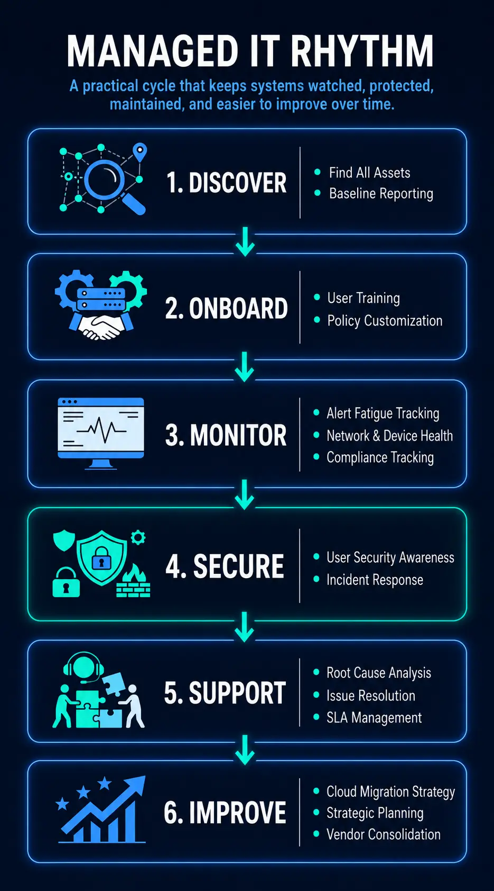
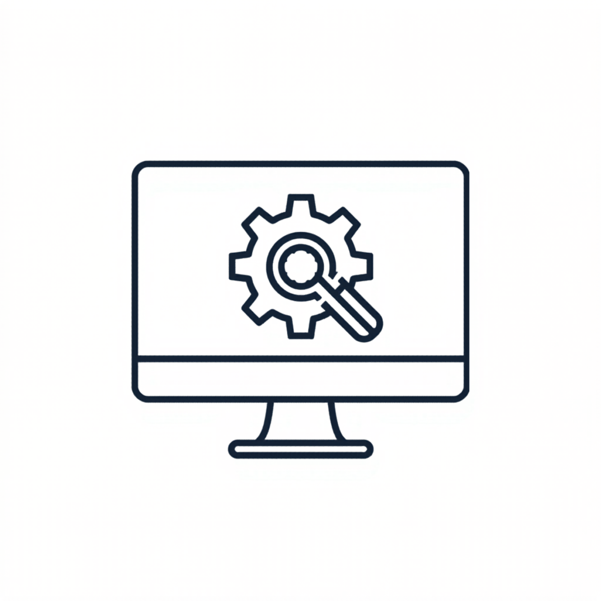
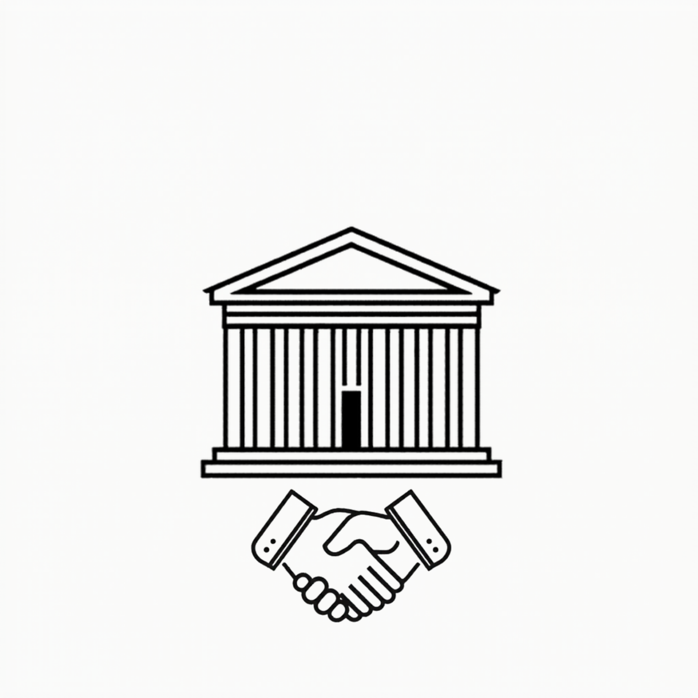

Managed IT Services
Monitoring, patching, maintenance, and support to help environments stay stable.
View the service →Midwest Managed IT helps small businesses stay secure, supported, and steady with proactive managed services, practical cybersecurity, Microsoft 365 administration, backup oversight, and responsive remote support.

You need support, standards, and protection without building a full internal department.
You already have tools or partial support in place, but want cleaner oversight and better follow-through.
Monitoring, patching, maintenance, and responsive support.
Endpoint security, layered defenses, hardening, and safer environments.
User management, tenant oversight, and practical cloud administration.
Backup oversight and recovery planning that has some backbone.
These are the service lanes most buyers want to understand quickly, without digging through jargon or endless menus.
Monitoring, patching, maintenance, and support to help environments stay stable.
View the service →Endpoint protection, policy hardening, risk reduction, and safer day-to-day operations.
View the service →Tenant hygiene, user setup, cloud administration, and support for business productivity tools.
View the service →Backup oversight, health awareness, and recovery planning for when things get rough.
View the service →Responsive troubleshooting for the day-to-day snags that slow people down.
View the service →Practical advice on tools, upgrades, lifecycle planning, and next-step decisions.
View the service →Midwest Managed IT is built around ongoing support, prevention, protection, and business continuity. Local hands-on work can still exist when needed, but the story is not break-fix roulette.
Faster response, wider coverage, and less wasted time than relying on truck rolls for every issue.
Onsite support can still be available for nearby clients or situations that actually require hands on the keyboard or the rack.
Protection, hardening, and backup oversight belong inside the service relationship, not bolted on after a scare.
Structured service levels help smaller organizations get stronger support without buying an enterprise circus tent.
A quick look at the three service lanes. The details are there when you are ready.

Best fit: operational baseline
For organizations that want proactive management, core support, and a steadier environment.
Security layer: managed protection + backup
The strongest public lead. Managed service plus stronger protection and backup coverage for small business.

Best fit: governance and growth readiness
For organizations that want fuller administration, stronger governance, and deeper strategic support.
Not every company needs the same support rhythm. Midwest Managed IT is strongest when the business wants clearer standards, better follow-through, calmer support, and security woven into the relationship instead of living in a separate bucket.
Not as a rigid rulebook. More like a clean map for buyers who want to know whether Midwest Managed IT is built for their kind of environment.
You want real support structure, patching, user administration, and clearer ownership without building an in-house department from scratch.
An office manager, operations lead, or owner is carrying too much of the day-to-day technology drag and needs a steadier outside partner.
Users, licenses, onboarding, offboarding, sharing, and admin cleanup have grown beyond whatever system used to exist in theory.
You have some tools in place, but want protection, backup awareness, and support to move in the same direction instead of orbiting each other.
This gives you a clear picture of how support works before the first call.
Learn the environment, the friction points, and what success should look like.
Review devices, users, cloud tools, backups, and support needs.
Reduce drift, improve standards, and put support lanes in place.
Layer in stronger protection, backup readiness, and safer defaults.
Move into an ongoing relationship with clearer expectations and fewer surprise fires.
Most buyers want to know how support works, what can stay in place, and what practical improvements come first.
Not everyone wants to jump straight from a headline into a sales call. These short evergreen guides answer a few common questions and give the site a stronger educational spine without turning it into a content warehouse.
See why prevention, ownership, and a steadier support rhythm usually beat emergency roulette.
Read the guide →Signs the tenant has become a junk drawer and what cleaner administration actually looks like.
Read the guide →A practical look at coverage, recovery confidence, and why backup should feel sturdier than hopeful.
Read the guide →The site now has real interior doors, not just a polished front porch. The next conversation can focus on your environment, friction points, and where support needs to get steadier.